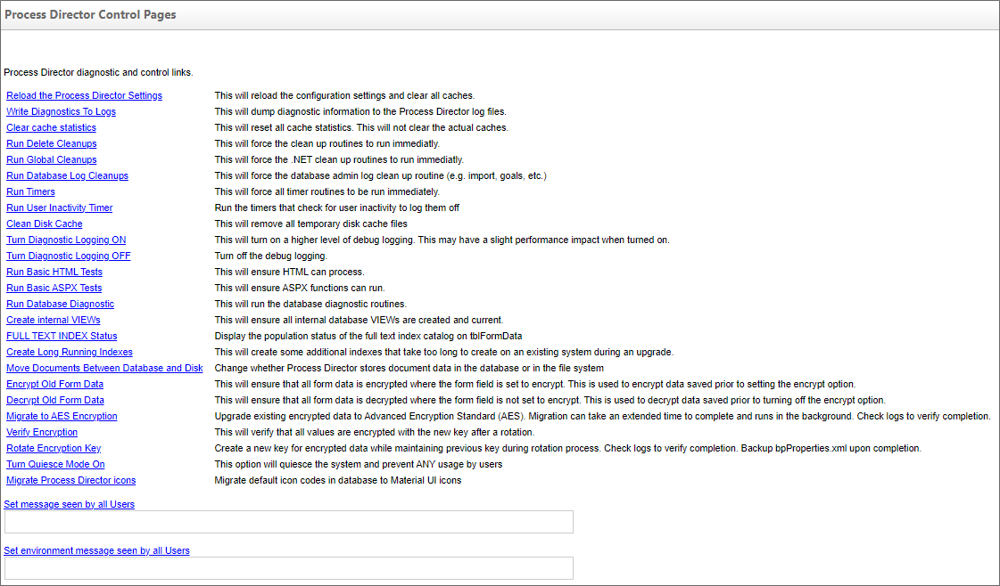
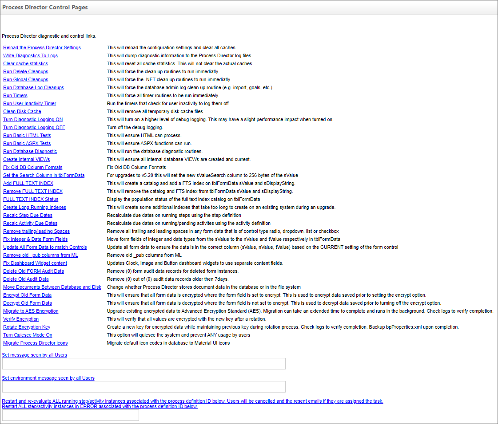

The Server Control page enables you to run various tests and cleanups to ensure that Process Director is running properly. Most of the server control items are self-explanatory, but a few require a bit more elaboration.
You can set a message that will be seen by all users when they log into Process Director. You can choose not to send a message by leaving the text field blank and clicking Set message seen by all Users.
The Turn Quiesce Mode On link will disable Process Director for end users, but not administrators. Quiesce mode enables administrators to make changes to the Content List, import applications, and do other administrative tasks, while preventing non-administrative users from accessing Forms or other objects. This function is useful for making administrative changes that might disrupt users. When turning Quiesce Mode on, you can also provide a message using the Set message seen by all Users link to notify them that some administrative activity is in progress, and their access to the system is temporarily suspended.
For Process Director v5.45 and higher, an input field is displayed when clicking Set environment message seen by all Users. This input field enables administrators to specify a message to be displayed to inform users if the system on which they’re working is a Development, Staging, or Production system. The visual presentation of this message is also customizable, as described in the UI Customization topic.
For Process Director v6.1.0 and higher, a new control link, Migrate Process Director icons, will update any existing default object icons used in previous versions of the product to the most recent default icons.

Additional troubleshooting options are available on this tab when in Debug Mode.

The additional debug mode operations all have explanatory text describing their usage as well.